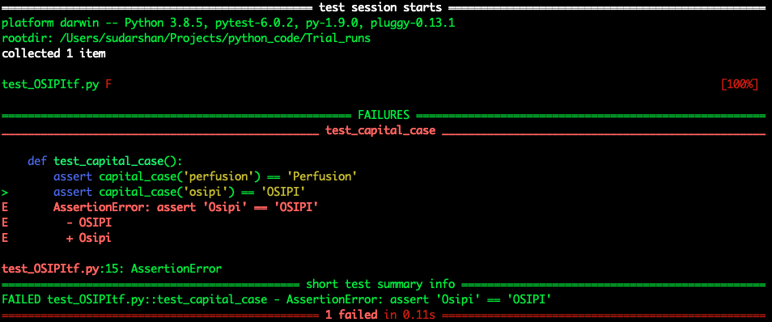

Creating a Python test file¶
This guide briefly describes how to get started with writing a unit test in Python using pytest
Installing pre-requisites / dependencies¶
Testing is performed using pytest and can be installed using pip
pip install -U pytest
or with the conda package manager as shown below.
conda install -c conda-forge pytest
Numpy and scipy are commonly used scientific packages that can similary be installed using pip or conda package managers.
Creating a test file¶
Let’s assume for our purpose, all the source code is located in a folder src, and all the test code is located in a folder test.
The test file corresponding to the src file to be tested, is named by either adding the prefix test_ or the suffix _test to the name of the src file. In our case, the test_ nomenclature has been adopted.
Test File Contents¶
An example test file is shown as follows. Details on the test-specific code can be found on Pytest Docs.
#Example 1:test_OSIPItf.py
def capital_case(x):
return x.capitalize()
def test_capital_case():
assert capital_case('perfusion') == 'Perfusion'
It is important to note that the test_ prefix convention use continues within the test file as well to denote which functions perform the test routines. In another example shown below, the test cases and the functions being tested are locted in different files.
#Example 2: test_example_functions.py
from src.example_functions import add, remove_spaces
import pytest
@pytest.mark.parametrize('x, y, result', [
(10,10,20),
(12,0,12),
(-1,-6,-7)
])
def test_add(x, y, result):
assert add(x,y) == result
@pytest.mark.parametrize('data, result', [
('a b', 'ab'),
('first last', 'firstlast')
])
def test_remove_spaces(data,result):
assert remove_spaces(data) == result
Executing a test¶
The results of the test can then be obtained using $ pytest at the command line. If we perform this for Example 1, we see the following output:
 Now, if example 1 were modified to
Now, if example 1 were modified to
#Example 1:test_OSIPItf.py
def capital_case(x):
return x.capitalize()
def test_capital_case():
assert capital_case('perfusion') == 'Perfusion'
assert capital_case('osipi') == 'OSIPI'
the output of $ pytest would result in a filed test as shown below.

As indicated in the failure message, the test failed for the case where the output of capital_case('osipi') - the expected output OSIPI is different from the function output Osipi.